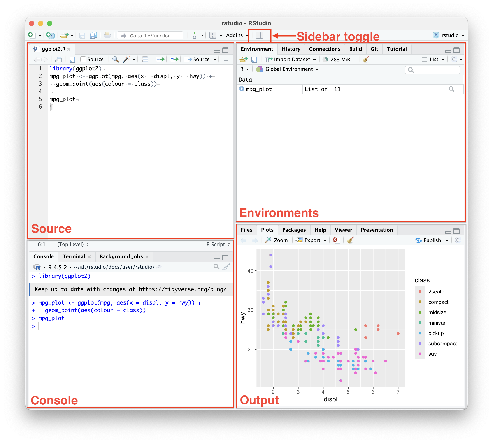

Практика 1. Знакомство с RStudio
Первая практика посвящена не столько синтаксису R, сколько рабочей среде: где выполняется код, где сохраняются команды и как RStudio организует работу над отдельным проектом.
Если что-то окажется сложным для понимания и запоминания, то это нормально! Во-первых, только когда нам сложно, мы учимся. Во-вторых, на следующих практиках мы будем пользоваться многим из того, что описано здесь, а значит вам будет легче вспомнить!
RStudio как рабочая среда
RStudio – это среда разработки: приложение, в котором удобно писать и запускать код, работать с проектами, просматривать объекты и графики, читать справку и управлять файлами.
При этом R и RStudio – не одно и то же. R – это язык программирования и программа, выполняющая написанный на этом языке код. RStudio предоставляет интерфейс для работы с R.
Можно представить, что R – двигатель, а RStudio – кабина управления. Кабина помогает работать с двигателем, но не заменяет его.
Возможности RStudio не ограничиваются R-кодом. В программе также встречаются инструменты, связанные с Python, терминалом, Git, публикацией документов и другими видами работы.
Окно RStudio
Рабочее окно RStudio обычно разделено на четыре области. Внутри каждой области может находиться несколько вкладок.

Окно RStudio с четырьмя основными областями. На снимке редактор расположен слева сверху, консоль – слева снизу, рабочее окружение – справа сверху, а вкладки с файлами, графиками и справкой – справа снизу.
| Область | Что в ней находится |
|---|---|
| Source | Открытые скрипты и документы. Здесь пишут и сохраняют код |
| Console | Выполняемые команды, сообщения, ошибки и текстовые результаты |
| Environment | Объекты, созданные во время текущей работы в R |
| History | История выполняемых команд |
| Files | Файлы и папки текущего проекта |
| Plots | Построенные графики |
| Help | Справка по функциям и пакетам |
| Viewer | HTML-документы и другое веб-содержимое |
Когда ни один скрипт не открыт, область Source может быть не видна. Она появляется после создания или открытия файла с кодом.
Каждую область мы рассмотрим в том или ином примере далее.
RStudio позволяет переставлять области и выбирать, какие вкладки находятся в каждой из них. Эта настройка находится в Tools → Global Options → Pane Layout и также открывается через View → Panes → Pane Layout.
Настройки RStudio
Глобальные настройки действуют для RStudio и всех проектов, над которыми вы работаете.
Как открыть общие настройки
- Через меню: Tools → Global Options.
- Горячая клавиша в macOS:
Cmd + ,.
На этом этапе уже понятны настройки, которые относятся к внешнему виду самого окна:
| Что требуется найти | Путь в окне Global Options |
|---|---|
| Тема RStudio, тема редактора и размер шрифта | Appearance |
| Расположение вкладок по областям окна | Pane Layout |
Внешний вид и расположение областей можно настроить под привычный способ работы. Остальные параметры будут появляться далее, когда станут понятны связанные с ними элементы RStudio.
Консоль и первая команда
После открытия RStudio можно сразу начать работать с консолью. На свободной строке находится приглашение >: оно означает, что R готов принять новую команду.
Первой командой может стать простое выражение:
2 + 2После нажатия Enter R печатает результат:
[1] 4[1] показывает номер первого напечатанного элемента в этой строке. Сам результат вычисления здесь – 4.
На этом примере виден основной цикл интерактивной работы:
- R получает фрагмент кода
- Разбирает его запись
- Выполняет команду
- Возвращает результат, сообщение или ошибку.
Сессия R – это период работы запущенной программы R: от запуска или перезапуска до закрытия. В течение сессии R хранит созданные объекты, историю команд и некоторые результаты.
В обычной интерактивной работе консоль связывает пользователя с текущей сессией R. Команду можно напечатать непосредственно в консоли, позднее – отправить из скрипта или запустить из блока кода в документе. Вычисления выполняет R, а консоль показывает ход этого диалога.
Если передать незавершённый фрагмент (например с незакрытой скобкой), то приглашение > может смениться на +: так R показывает, что ожидает продолжения.
Консоль можно визуально очистить сочетанием Ctrl + L. Очистка окна не отменяет выполненные вычисления и не удаляет созданные объекты. Незавершённую команду (если она долго вычисляется) можно отменить клавишей Esc.
Проект RStudio
Когда работа перестаёт быть “одноразовой”, а анализ предвещает быть большим и независимым, то такую работу удобно оформить как проект.
Проект – это папка, в которой собраны связанные файлы одной работы: код, данные, результаты и другие материалы. Файл с расширением .Rproj сообщает RStudio, какая папка является началом проекта и содержит его настройки.
Проект и сессия – не одно и то же. Проект объединяет файлы на диске, а сессия описывает текущее состояние работающей R.
Создание проекта начинается с File → New Project. RStudio предлагает создать для него новую папку или превратить в проект уже существующую.
Позднее проект можно открыть двойным щелчком по файлу *.Rproj или через меню RStudio File → Open Project… или File → Recent Projects.
Настройки открытого проекта находятся в меню Project → Project Options. Они относятся только к текущему проекту и могут переопределять часть глобальных параметров. Горячая клавиша в macOS: Shift + Cmd + ,.
Проекты помогают:
- Не смешивать файлы разных работ
- Быстро переключаться между задачами
- Переносить связанную работу целиком
- Восстанавливать удобный рабочий контекст
.Rproj не учитывает и не записывает используемые данные, а также не фиксирует версии использованных пакетов. Для воспроизводимости анализа в папке проекта должны находиться необходимые файлы, в том числе код.
Файлы внутри проекта
RStudio работает не только с R-скриптами. В одной папке проекта могут находиться файлы нескольких типов.
- Файл проекта
.Rproj– настройки и точка входа проекта RStudio.
- Код
.R– обычный скрипт с кодом R.cpp,.pyи другие расширения – исходный код на других языках, с которыми также может работать редактор RStudio.
- Документы с текстом (markdown) и кодом (Подробнее в разделе «R Markdown и Quarto»)
.Rmd– документ R Markdown.qmd– документ Quarto.
- Готовые документы (
.html,.docx,.pdf) - Данные и изображения (
.csv,.tsv,.xlsx,.png,.jpgи другие) - Состояние сессии (Подробнее в подразделе
.RDataи.Rhistory).RData– сохранённые объекты (в т.ч. переменные).Rhistory– история выполненных команд.
Расширение – часть имени после последней точки. Оно помогает RStudio и другим программам определить назначение файла и способ его обработки.
Параметры кодировки находятся в Tools → Global Options → Code → Saving. Обычно менять их специально не требуется, но этот раздел может понадобиться, если текст на русском языке отображается неправильно.
Скрипт и область Source
Команды можно вводить в консоли, но последовательность действий удобнее сохранять в скрипте – обычном текстовом файле с расширением .R.
Новый пустой скрипт сначала существует только как открытая вкладка. После сохранения он получает имя и появляется в папке проекта на вкладке Files. Пока файл не сохранён, его название во вкладке окрашено и рядом с ним отображается звёздочка *.
Выделенный код из скрипта выполняется сочетанием Ctrl(Cmd) + Enter. Если ничего не выделено, то RStudio отправляет в консоль текущую строку (где находится ваш курсор). Можно выполнить целую строку, несколько строк или часть выражения: выделенный фрагмент выполняется отдельно от остального кода.
Параметры редактора находятся в Tools → Global Options → Code. Разделы Editing, Display и Completion отвечают за поведение редактора, отображение кода и автодополнение.
Консоль удобна для быстрых экспериментов и показывает ход текущей работы. Скрипт сохраняет последовательность команд, которую можно прочитать, изменить и выполнить повторно.
Комментарии
В R всё после символа # до конца строки считается комментарием и не выполняется:
# Это комментарий
2 + 2Комментарии объясняют назначение фрагмента кода. Ими также можно временно отключить несколько строк. Выделенные строки комментируются и раскомментируются сочетанием Ctrl(Cmd) + Shift + C.
Сессия R: объекты и история команд
После выполнения команды результат может появиться в разных областях RStudio:
2 + 2– число печатается вConsolex = 2– объектxпоявляется вEnvironmentView(iris)– таблица открывается в отдельной вкладке просмотраplot(iris)– график появляется во вкладкеPlots?plot– документация открывается во вкладкеHelp.
Код остаётся в редакторе Source, выполняется в текущей сессии R через консоль, а результат отображается там, где его удобнее рассматривать: в Console, Environment, Plots, Help или отдельной вкладке просмотра данных.
Для первых экспериментов не обязательно загружать собственный файл. В R есть встроенные наборы данных, например iris.
Если выполнить имя объекта:
irisR напечатает таблицу в консоли. Для большой таблицы такой способ неудобен, поэтому её можно открыть в отдельной вкладке:
View(iris)Тот же набор данных можно передать функции построения графика:
plot(iris)График появляется на вкладке Plots. В данном случае R выбирает способ отображения, подходящий для таблицы с несколькими переменными. Содержимое Plots относится к текущей сессии, а сохранённая строка plot(iris) позволяет построить изображение заново.
Описание функции во вкладке Help открывается знаком вопроса:
?plotДва вопросительных знака выполняют более широкий поиск по установленной справке:
??scatterplotEnvironment
Следующий код создаёт объекты x и y:
x = 2
y = 3После выполнения кода имена x и y появляются в Environment вместе с их значениями.
R допускает присваивание с помощью знака =. Другие варианты записи присваивания будут рассмотрены позднее.
К сохранённому объекту можно обратиться по имени:
x[1] 2Пока x существует в текущей сессии, R понимает это имя даже в другом открытом файле. Это удобно, но может стать источником ошибки. Если скрипт использует x, но нигде его не создаёт, он работает только благодаря старому объекту в Environment. После чистого перезапуска R или на другом компьютере появится сообщение object 'x' not found.
Ненужные объекты можно удалить по одному или очистить всё окружение кнопкой с изображением метлы. Очистка Environment не изменяет сохранённый скрипт.
History
Вкладка History содержит команды, отправляемые в R.
Сохранение строки в скрипте не добавляет её в историю: команда появляется там только после выполнения. Команда, введённая непосредственно в консоли, тоже попадает в историю, хотя её может не быть ни в одном скрипте.
История помогает найти недавний эксперимент, но не заменяет упорядоченный код. В ней подряд сохраняются удачные команды, ошибки и случайные проверки. В консоли можно использовать стрелку вверх, чтобы листать предыдущие команды.
.RData и .Rhistory
При закрытии сессии RStudio может предложить сохранить рабочее пространство. .RData и .Rhistory – это файлы на диске:
.RDataхранит объекты изEnvironment;.Rhistoryхранит последовательность выполненных команд.
Если восстановление рабочей сессии включено, при повторном открытии проекта объекты из .RData загружаются в память R, а команды из .Rhistory появляются в истории.
Автоматическое восстановление может быть удобным для продолжения работы, но большой файл .RData способен замедлить запуск и вернуть объекты, происхождение которых не видно из текущего скрипта. Начало работы с пустым Environment помогает проверить, что все необходимые объекты создаются сохранённым кодом.
Параметры восстановления .RData, сохранения workspace и истории при завершении работы находятся в Tools → Global Options → General → Basic. Для отдельного проекта часть этого поведения можно изменить через Project → Project Options.
Связь между сессией и скриптом хорошо видна в последовательности Restart R → Run All. Перезапуск начинает новую сессию с пустым Environment, а выполнение всего сохранённого скрипта заново создаёт описанные в нём объекты. Если необходимые объекты появляются снова, их создание зафиксировано в коде и не зависит от состояния предыдущей сессии.
R Markdown и Quarto
R Markdown (.Rmd) и Quarto (.qmd) нужны для создания воспроизводимых документов, в которых поясняющий текст, код и его результаты находятся вместе. По этой идее они похожи на Jupyter Notebook: вычисления можно сопровождать комментариями, таблицами и графиками.
Файл R Markdown создаётся через File → New File → R Markdown…, а файл Quarto – через File → New File → Quarto Document….
Кнопка Knit в R Markdown и кнопка Render в Quarto запускают код, вставляют полученные результаты в документ и создают готовый файл, например .html, .docx или .pdf. Если код или данные изменились, документ можно собрать заново.
Памятка по сочетаниям клавиш
Список назначенных сочетаний клавиш открывается через Help → Keyboard Shortcut Help или Alt(Option) + Shift + K. Изменить сочетания можно через Tools → Modify Keyboard Shortcuts. Все сочетания сразу запоминать не требуется.
Основные сочетания
| Действие | Сочетание |
|---|---|
| Сохранить активный документ | Ctrl(Cmd) + S |
| Выполнить текущую строку или выделение | Ctrl(Cmd) + Enter |
Перейти в Source |
Ctrl + 1 |
Перейти в Console |
Ctrl + 2 |
| Прервать вычисление или отменить незавершённую команду | Esc |
Палитра команд открывается сочетанием Ctrl(Cmd) + Shift + P. В ней можно начать вводить название действия или настройки, например pane layout, new script или keyboard shortcuts, а затем выбрать найденную команду.
Типичные ситуации (ЧТО ДЕЛАТЬ?)
В консоли вместо > отображается +
R считает выражение незавершённым. Обычно не закрыта скобка или кавычка. Выражение можно завершить либо отменить клавишей Esc.
Объект есть в Environment, но его нет в скрипте
Объект создаётся вручную в консоли или восстанавливается из .RData. Для воспроизводимости код создания такого объекта должен находиться в скрипте.
Возникла ошибка object not found
R не знает указанного имени в текущей сессии. Причиной может быть опечатка, другой регистр букв или отсутствие более ранней команды, создающей объект.
Код записан в скрипте, но ничего не происходит
Текст в редакторе не выполняется автоматически. Для выполнения текущая строка или выделенный фрагмент должны быть отправлены в R.
Команда есть в скрипте, но отсутствует в History
Запись команды в файл не добавляет её в историю. History фиксирует выполненные действия сессии, а не содержимое файлов.
Файл не отображается на вкладке Files
Скорее всего, новый документ ещё не сохранён или сохранён вне папки проекта.